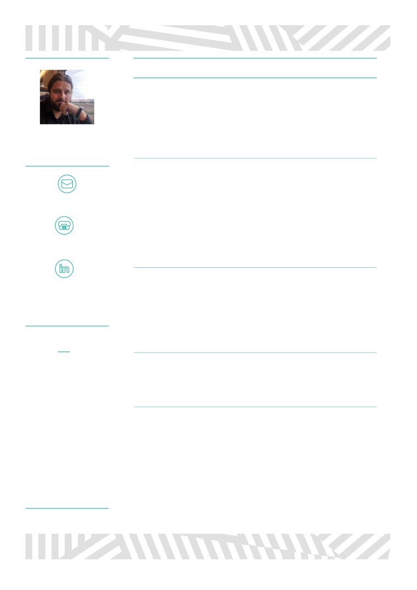
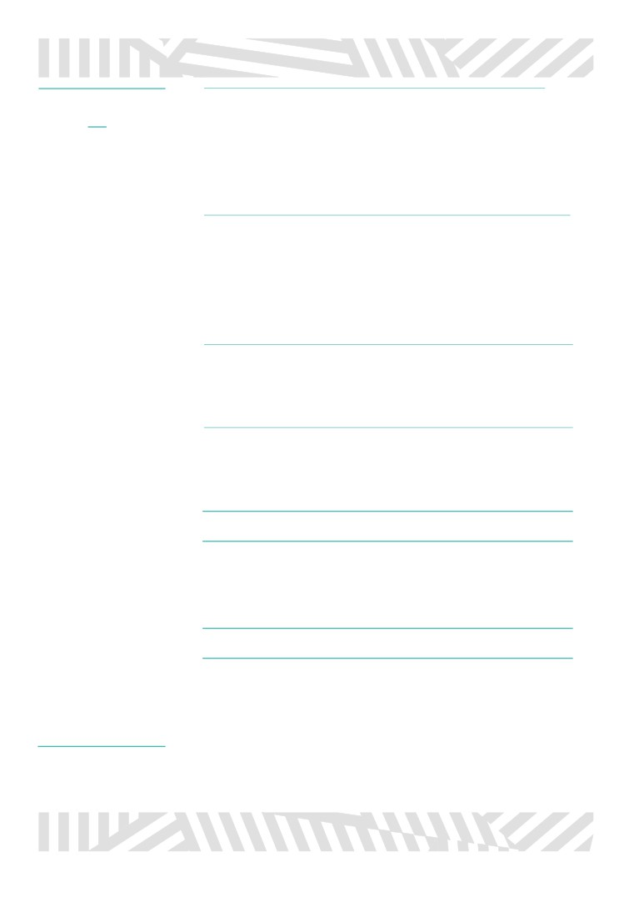

PROFESSIONAL SUMMARY
BACKEND DEVELOPER (JAVA SPRING) - GOLES MESSENGER.ES
November 2019 - nowadays
· Backend Developer for Goles Messenger App (Java Spring, AWS, Redis,
(Lua Scripts), MySQL, Dynamo,..)
SALDAÑA
· Responsible of the dashboard development to insert and manage data
· Communication responsible with Grupo Godó.
CERCÓS, VÍCTOR
12/12/1978
· Team workflow Responsible and team technical direction.
REACT.JS DEVELOPER - SHOOTR.COM
November 2018 - October 2019
· Developer responsible for the development of the Shootr’s customer
management dashboard (OTT’s)
· Overlay chat developement for clients, being our main goal Mediaset.
· Commercial technician at trade shows in Cannes, Cancún, Barcelona,
Madrid,…
· Technician responsible for the implementation of chat in clients and
609478214 / 935044119
potentials. (RTVE, La Liga, Movistar, VIACOM, TyC,...)
· Flow Facilitator / Scrum with Agile: Kanvan.
ANDROID TEAM LEADER - SHOOTR.COM
June 2016 - November 2018
· Responsible of the development and management of the Android team for
Shootr app (Social network to facilitate conversations between people),
used in TV and radio in relevant shows such as Arucitys, RAC105, RAC1
or OT2017 among other
· Flow Facilitator / Scrum master with Agile: Scrumm and Kanvan.
ABILITIES
· Good team
WINDOWS TEAM LEADER - SHOOTR.COM
management, creation of a
September 2015 - June 2016
good environment and
· Responsible of the development and management of the Windows Phone
agile dynamics.
team for Shootr app.
· Ease of adaptation to
different technologies.
PROJECT MANAGEMENT / SENIOR DEVELOPER - FAV24 (WORLD
TOUR PLATFORMS, S.L.)
Career oriented to mobile
2012 -2016
devices.
· Responsible of the development of the app “AppReservas” (backend):
Mobile restaurant reservations for iPhone and Android.
· Ease of treatment and
· Responsible for multimedia project content SMS Movistar, Vodafone;
adaptation.
newsletter and Veritas management, horoscope release for south american
company Starmedia for mobiles and Duet Sports computer maintenance.
· Continuous training.
· Windows Phone development and maintenance for Android and IOS app
“Goles Messenger” (backend and app)

PROJECT MANAGEMENT / SENIOR DEVELOPER - KINETICAL
KNOWLEDGE
2007- 2012
· Responsible for the development and implementation team of the
· Extensive knowledge on
CRM, sales manager and digital catalogue of mobility kSales in the
Java, and Spring, and
following companies: Aretex, Oro Franco, Umbro, Sevip, Inofix,
Android libraries
Punto Blanco, Escorpión, Massana, Laboratorios ERN, IONFarma,
· AWS (EC2, RDS, S3,
Eurocrono, Janira, Indo, Manterol among other.
Dynamo, Redys,…)
advanced use
SENIOR DEVELOPER - KINETICAL BUSSINESS, S.L
· Knowledge on web
2004- 2007
development in React.js
with Redux. (also html,
· Development of the first version the sales manager and digital catalogue
css, php…)
kSales.
· Participation in the mobility project for the generation of minutes of
· Experience with DB
football matches by the referees in real-time play through PDA.
(Mysql, MSSql, SQLite,
· Participation in the project of the company ACB Data, Instant Replay.
MongoDB,…)
· Advanced use of Agile
JUNIOR DEVELOPER - KINETICAL BUSSINESS, S.L
tools (JIRA, Trello, Taiga,
2003- 2004
Slack…)
· Development of sports statistics management applications in soccer and
· Used to working with
handball PDA.
github, gitlab, subversión,
Source Safe y TFVC.
EDUCATION - INSTITUCIÓN CULTURAL DEL CIC
· Wide experience on
2002 - 2003
multiples versions of .Net
· Teacher and coordinator of the computer science stays of the
from v1.1., (C#, WCF,
Generalitat.
ASPNet, MVC3,
Silverlight,…)
· Wide experience on
STUDIES
mobile devices since 2003
(PDA, Windows Phone,
TECHNICAL ENGINEERING IN COMPUTER MANAGEMENTS.
Android, Tablet PC…)
Universitat Autònoma de Barcelona
· Driving license A/B
2004
· Catalan and Spanish
maternal
VOLUNTEERING & MANAGEMENT
· English and soft
knowledge of French
· Advanced knowledge on
the responsibility of updating, improving and designing the page. Coordinate
photography and
collaborators to send content.
Photoshop
· Scout Member since 1991 to 2005, as pupil (1991-1997), educator (1997-
2003), group leader (2002) and treasurer (2003-2005).
· Senior futsal coach on the team IPSE-El Pilar (2006-2012)
Página 2 - Saldaña Cercós, Víctor. Curriculum vitae